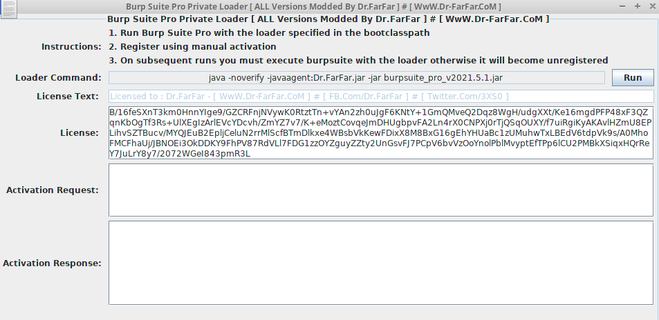
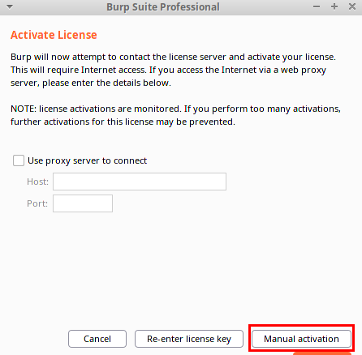
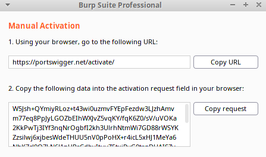
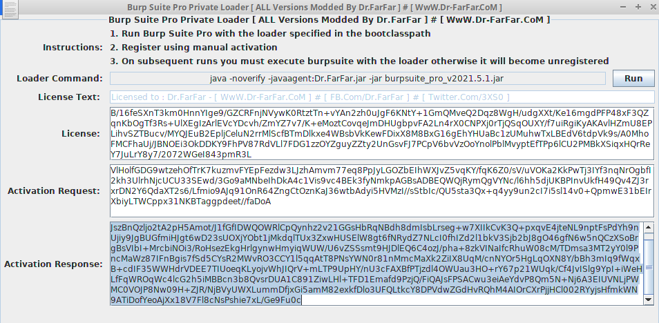
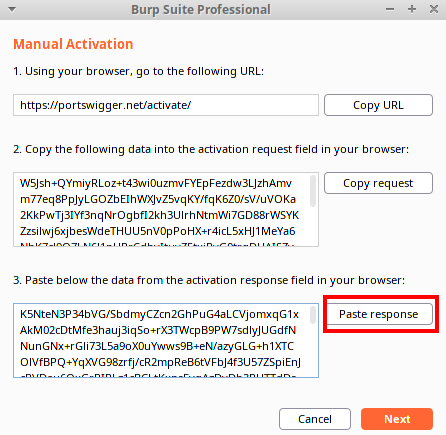
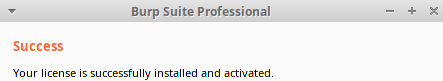

BurpSuite Pro (cracked)
Burpsuite pro(cracked):
For testing purpose here i have tested if this cracked version of BurpSuite work. I do not recommend to do it, since can contain malwares
Run itGo to the folder where we have downloaded burpsuite_pro_v2021.5.1.jar
cd /home/student/Desktop/Burp/BurpPro/
java -noverify -javaagent:Dr.FarFar.jar -jar burpsuite_pro_v2021.5.1.jar
cd /home/kali/bin/burpsuite_pro_v2021.8.4
java -noverify -javaagent:/home/kali/bin/burpsuite_pro_v2021.8.4/zerodaylab.jar -jar /home/kali/bin/burpsuite_pro_v2021.8.4/burpsuite_pro_v2021.8.4.jar
or create a script to launch Burp Pro Cracked
#!/bin/sh
sudo java -noverify -javaagent:/home/kali/bin/burpsuite_pro_v2021.8.4/zerodaylab.jar -jar /home/kali/bin/burpsuite_pro_v2021.8.4/burpsuite_pro_v2021.8.4.jar
1. Run the Loader
2. Run
BurpSuite Pro following the instructions in the loader
java -noverify -javaagent:zerodaylab.jar -jar burpsuite_pro_v2021.8.4.jar
5. Register using manual activation
6. Copy the activation request
7. Instead of goig to
https://portswigger.net/activate come back to the loader and paste the the request
 Copy the Activation Response and paste it using the button
 